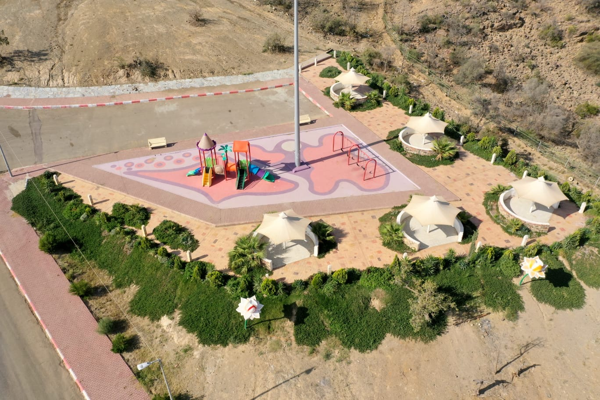

بلجرشي
بلجرشي هي محافظة سعودية تتبع منطقة الباحة وتعتبر المركز التجاري الثقافي والاقتصادي الأبرز في المنطقة. تتميز بطبيعة جبلية خلابة ومناخ معتدل صيفًا، وفيها غابات وأودية مثل وادي مذود بالإضافة إلى تاريخ قديم وقرى تاريخية مما يجعلها وجهة سياحية بارزة ومركزًا لعدد من الدوائر الحكومية والأسواق الشعبية مثل سوق السبت.
الأشياء المشهورة في بلجرشي:
- منتزه الشكران
- حديقة الفراشة
- القرى التراثية القديمة
- الزراعة
- المهرجانات الصيفية

منتزه الشكران

حديقة الفراشة